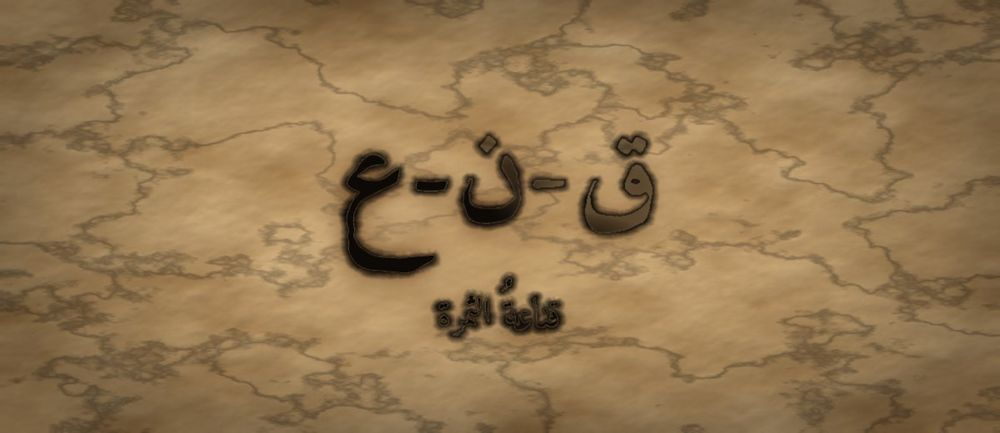

مَطبعةُ جُذور · دبي · MCMXXVI · سِلْسِلَةُ فَنِّ البَيان

مَرحلةُ الثِّمَار · الفئة ١٦–١٨ · الجذر ق-ن-ع · ابن جماعة
❦ ✦ ❧
السِّفْرُ ١٦ — قناعةُ الثمرة
«أُقْنِعُ بِالْحُجَّةِ لَا بِالْإِلْحَاحِ»

الرِّسَالَةُ الجَوْهَرِيَّة
الْإِقْنَاعُ لَيْسَ غَلَبَةً فِي الْكَلَامِ، بَلْ أَنْ تَفْتَحَ لِلْآخَرِ بَابًا يَدْخُلُ مِنْهُ بِقَدَمَيْهِ. حِينَ يَتَعَلَّمُ الشَّابُّ أَنْ يَبْنِيَ دَعْوَاهُ عَلَى دَلِيلٍ، وَأَنْ يَبْدَأَ مِنْ نُقْطَةِ اتِّفَاقٍ، يَكْتَشِفُ أَنَّ الْمُقْتَنِعَ يَبْقَى مُقْتَنِعًا، وَأَنَّ الْمَغْلُوبَ يَعُودُ غَدًا خَصْمًا.
بِطَاقَةُ هُوِيَّةِ السِّفْر
| المستوى / الدرجة | ثِمَار — ثَمَرَةٌ تَنْضُجُ (الدرجةُ الأولى في مستوى الثمارِ) |
| الفئة العمرية | ١٦–١٨ سنة · نطاقُ تداخلٍ يمتدُّ إلى ١٩ لطالبِ المرحلةِ الجامعيّةِ الأولى |
| الجذر الأساسي | ق – ن – ع · الْإِقْنَاعُ: أَنْ يَرْضَى الْعَقْلُ بِمَا لَمْ يَكُنْ رَاضِيًا بِهِ |
| أسرة الجذر | قَنَاعَة · أَقْنَعَ · اِقْتِنَاع · مُقْنِع · قَانِع · إِقْنَاع |
| المحطّة | الإقناعُ — أنْ ينتقلَ الرأيُ من عقلٍ إلى عقلٍ بالدليلِ لا بالضغطِ |
| المرساة الحسّيّة | الشابُّ يبني حجّتَهُ بثلاثِ بطاقاتٍ يضعُها بيدِهِ أمامَهُ: دعوى · دليل · مثال |
| الاستعارة | الثمرةُ لا تُقنِعُ من يتذوّقُها بالكلامِ؛ تنضجُ في وقتِها فيأتيها الناسُ بأنفسِهم |
| الشخصيتان الحكيمتان | بدرُ الدينِ ابنُ جماعةَ (فقيهُ آدابِ العالِمِ والمتعلِّمِ) + الجَدّةُ رملة |
| الشخصية الرمزيّة | نورُ الثمرةِ — بطلةُ السلسلةِ في مرحلةِ الثمارِ |
| الشخصية المضادّة | الشَّمْسُ الْمُلِحَّةُ — شخصيّةٌ رمزيّةٌ (لا تاريخيّةٌ) تُمثِّلُ الإلحاحَ بالضغطِ، وتتعلّمُ التدرُّجَ |
| المهارة (فعل) | أُقْنِعُ — الحلقةُ السادسةَ عشرةَ في القوسِ التراكميِّ للسلسلةِ |
| المرجعُ النظريّ | استرشادًا بـ TRT — نظرية القراءة الملموسة · ومجالُ النضجِ والإقناعِ |
| حدّ اللمس | كلُّ حركةٍ يؤدّيها الشابُّ بنفسِهِ؛ لا تلمسُ يدُ المرافقِ جسدَهُ، والحوارُ يجري بمسافةٍ مريحةٍ يختارُها هو |
| ملاحظة القياس | المؤشّراتُ وصفيّةٌ للرصدِ والوصفِ، تُقرأُ نموًّا لا تُستعمَلُ بوّابةً |
صَاحِبُ السِّفْرِ مِنَ التُّرَاث
بدرُ الدينِ ابنُ جماعةَ فقيهٌ وقاضٍ شافعيٌّ من القرنِ الثامنِ الهجريِّ، وليَ القضاءَ والخطابةَ في مصرَ والشامِ، واشتهرَ بكتابِهِ «تذكرةُ السامعِ والمتكلِّمِ في أدبِ العالِمِ والمتعلِّمِ» في آدابِ الطلبِ والمناظرةِ. نستلهمُ منهُ هنا: أنَّ للمُحاوِرِ أدبًا قبلَ أنْ تكونَ لهُ حجّةٌ، وأنَّ قصدَ الوصولِ إلى الحقِّ يسبقُ قصدَ الغَلَبَةِ على المُخالِفِ.
الشَّخْصِيَّةُ المُضَادَّة — الشَّمْسُ الْمُلِحَّةُ — شخصيّةٌ رمزيّةٌ لا تاريخيّةٌ، تصبُّ حرارتَها على الثمرةِ بلا انقطاعٍ لتُنضِجَها فورًا، لأنّها تظنُّ أنَّ الضغطَ الشديدَ يُسرِعُ الاقتناعَ. لا تُهزَمُ ولا تُشيطَنُ؛ بل تتعلَّمُ في النهايةِ أنْ توزِّعَ ضوءَها على أيّامٍ، فتكتشفُ أنَّ الثمرةَ التي نضجتْ على مهلٍ هي التي بقيتْ حُلوةً.
الجَذْرُ وَأُسْرَتُه
ق-ن-ع — قَنَاعَة · أَقْنَعَ · اِقْتِنَاع · مُقْنِع · قَانِع · إِقْنَاع
الجذرُ (ق-ن-ع) سالمٌ، ويدورُ معناهُ على الرضا والاكتفاءِ؛ ومنهُ «القَناعةُ» رضا النفسِ بما عندَها، و«الاقتناعُ» رضا العقلِ بما وصلَهُ من دليلٍ. يلاحظُ المعلّمُ أنَّ همزةَ «أَقْنَعَ» للتعديةِ: قَنِعَ هو، وأَقْنَعَهُ غيرُهُ؛ ففي بنيةِ الكلمةِ نفسِها درسٌ — الاقتناعُ يقعُ في نفسِ المخاطَبِ، وأقصى ما يملكُهُ المتكلِّمُ أنْ يُهيّئَ لهُ سببَهُ.
القِصَّةُ الكَامِلَة
المشهد ١ — نُورُ تَرْبَحُ الْجِدَالَ وَتَخْسَرُ الرَّأْيَ
صَارَتْ نُورُ ثَمَرَةً نَاضِجَةً، وَصَارَ لَهَا لِسَانٌ سَرِيعٌ. وَقَفَتْ فِي مَجْلِسِ الْحَدِيقَةِ تُدَافِعُ عَنْ فِكْرَةٍ تُؤْمِنُ بِهَا: أَنْ يُتْرَكَ رُكْنٌ مِنَ الْأَرْضِ بِلَا زِرَاعَةٍ لِيَسْتَرِيحَ. تَكَلَّمَتْ بِقُوَّةٍ، وَقَطَعَتْ كُلَّ اعْتِرَاضٍ، وَأَفْحَمَتْ مَنْ خَالَفَهَا حَتَّى سَكَتُوا. وَخَرَجَتْ مِنَ الْمَجْلِسِ رَابِحَةً. لَكِنَّهَا فِي الصَّبَاحِ وَجَدَتِ الرُّكْنَ مَزْرُوعًا كَمَا كَانَ. سَأَلَتْ: «أَلَمْ تَقْتَنِعُوا؟» فَقَالَ لَهَا غُصْنٌ قَدِيمٌ بِهُدُوءٍ: «سَكَتْنَا يَا نُورُ، وَالسُّكُوتُ لَيْسَ اقْتِنَاعًا. أَنْتِ غَلَبْتِنَا، وَلَمْ تُقْنِعِينَا. وَالْمَغْلُوبُ يَنْتَظِرُ فُرْصَتَهُ، أَمَّا الْمُقْتَنِعُ فَيَعْمَلُ.» وَعَادَتْ نُورُ إِلَى غُصْنِهَا تُفَكِّرُ فِي جُمْلَتِهِ. كَانَتْ تَظُنُّ أَنَّ نِهَايَةَ النِّقَاشِ هِيَ نَتِيجَتُهُ، فَعَرَفَتْ أَنَّ النَّتِيجَةَ تَظْهَرُ فِي الْغَدِ لَا فِي الْمَجْلِسِ. وَكَتَبَتْ فِي دَفْتَرِهَا سُؤَالًا: «هَلْ أُرِيدُ أَنْ أَرْبَحَ، أَمْ أُرِيدُ أَنْ يَتَغَيَّرَ شَيْءٌ؟»
المشهد ٢ — الشَّمْسُ الْمُلِحَّةُ تَنْصَحُ بِالضَّغْطِ
أَشْرَقَتْ عَلَيْهَا الشَّمْسُ الْمُلِحَّةُ وَقَالَتْ: «الْمُشْكِلَةُ أَنَّكِ خَفَّفْتِ يَا نُورُ! أَنَا أَعْرِفُ الطَّرِيقَ: صُبِّي الْحُجَّةَ صَبًّا، وَكَرِّرِيهَا حَتَّى يَمَلَّ الْمُخَالِفُ فَيُوَافِقَ. أَنَا أُنْضِجُ الثِّمَارَ بِالْحَرَارَةِ، وَكُلَّمَا زِدْتُ أَسْرَعَ النُّضْجُ!» فَجَرَّبَتْ نُورُ. أَعَادَتِ الْفِكْرَةَ عَشْرَ مَرَّاتٍ فِي يَوْمٍ وَاحِدٍ، وَرَفَعَتْ صَوْتَهَا، وَأَطَالَتِ الْكَلَامَ. فَمَا كَانَ مِنَ الْأَغْصَانِ إِلَّا أَنْ صَارَتْ تَتَجَنَّبُ الْمَجْلِسَ الَّذِي تَحْضُرُهُ. وَفِي ذَلِكَ الْأُسْبُوعِ سَقَطَتْ ثَمَرَتَانِ عَلَى الْأَرْضِ قَبْلَ أَوَانِهِمَا — نَضَجَتَا بِالْحَرَارَةِ مِنْ خَارِجِهِمَا، وَبَقِيَ دَاخِلُهُمَا مُرًّا. وَقَالَتْ لَهَا وَرَقَةٌ صَغِيرَةٌ فِي الْمَسَاءِ: «يَا نُورُ، لَمْ نَعُدْ نَسْمَعُ فِكْرَتَكِ؛ صِرْنَا نَسْمَعُ صَوْتَكِ فَقَطْ.» فَوَقَفَتْ نُورُ عِنْدَ هَذِهِ الْجُمْلَةِ طَوِيلًا، وَعَرَفَتْ أَنَّ التَّكْرَارَ لَا يُقَوِّي الْحُجَّةَ، بَلْ يُغَطِّيهَا.
المشهد ٣ — ابْنُ جَمَاعَةَ وَالْجَدَّةُ رَمْلَةُ يَبْنِيَانِ الْحُجَّةَ
جَلَسَ فِي ظِلِّ الشَّجَرَةِ الْقَاضِي ابْنُ جَمَاعَةَ، الرَّجُلُ الَّذِي كَتَبَ فِي أَدَبِ الْعَالِمِ وَالْمُتَعَلِّمِ، وَمَعَهُ الْجَدَّةُ رَمْلَةُ. قَالَ: «يَا نُورُ، قَبْلَ أَنْ تَسْأَلِي: كَيْفَ أَغْلِبُهُ؟ اِسْأَلِي: مَاذَا نَتَّفِقُ عَلَيْهِ أَنَا وَهُوَ؟ فَالْحُجَّةُ جِسْرٌ، وَالْجِسْرُ يَحْتَاجُ ضِفَّتَيْنِ.» ثُمَّ أَخْرَجَتِ الْجَدَّةُ ثَلَاثَ بِطَاقَاتٍ وَوَضَعَتْهَا عَلَى الْأَرْضِ: «خُذِي وَاحِدَةً وَاحِدَةً بِيَدِكِ. الْأُولَى: مَا الَّذِي تَدَّعِينَهُ فِي جُمْلَةٍ وَاحِدَةٍ؟ وَالثَّانِيَةُ: مَا دَلِيلُكِ الَّذِي يَسْتَطِيعُ خَصْمُكِ أَنْ يَرَاهُ بِعَيْنِهِ؟ وَالثَّالِثَةُ: مَا الْمِثَالُ الَّذِي يَجْعَلُهُ يَشْعُرُ بِهِ لَا يَفْهَمُهُ فَقَطْ؟ فَإِنْ عَجَزْتِ عَنْ وَاحِدَةٍ مِنْهُنَّ، فَرَأْيُكِ لَمْ يَنْضَجْ بَعْدُ.» ثُمَّ قَالَ ابْنُ جَمَاعَةَ: «وَأَدَبُ الْمُنَاظَرَةِ أَنْ تَنْقُلَ رَأْيَ مُخَالِفِكَ كَمَا يَرْضَاهُ هُوَ، لَا كَمَا يَسْهُلُ عَلَيْكَ رَدُّهُ. فَإِنْ ضَعَّفْتَ رَأْيَهُ لِتَغْلِبَهُ، فَقَدْ غَلَبْتَ رَأْيًا لَمْ يَقُلْهُ أَحَدٌ.»
المشهد ٤ — نُورُ تَبْدَأُ مِنْ نُقْطَةِ الِاتِّفَاقِ
عَادَتْ نُورُ إِلَى الْمَجْلِسِ وَمَعَهَا الْبِطَاقَاتُ الثَّلَاثُ. لَمْ تَبْدَأْ بِفِكْرَتِهَا. بَدَأَتْ بِسُؤَالٍ: «هَلْ نَتَّفِقُ جَمِيعًا عَلَى أَنَّنَا نُرِيدُ ثِمَارًا أَكْثَرَ فِي السَّنَةِ الْقَادِمَةِ؟» قَالُوا: «نَعَمْ.» فَرَفَعَتِ الْبِطَاقَةَ الْأُولَى: «دَعْوَايَ: الْأَرْضُ الَّتِي تَسْتَرِيحُ عَامًا تُعْطِي أَكْثَرَ عَامَيْنِ.» ثُمَّ الثَّانِيَةَ: «دَلِيلِي أَمَامَكُمْ: الرُّكْنُ الشَّمَالِيُّ تُرِكَ بِلَا قَصْدٍ عَامَيْنِ، فَانْظُرُوا حَجْمَ ثِمَارِهِ الْيَوْمَ.» ثُمَّ الثَّالِثَةَ: «وَتَخَيَّلُوا أَنْفُسَكُمْ تَعْمَلُونَ بِلَا نَوْمٍ شَهْرًا — كَمْ سَتُنْجِزُونَ فِي الشَّهْرِ الَّذِي بَعْدَهُ؟» وَسَكَتَتْ. وَلَمْ تُكَرِّرْ. وَفِي الصَّبَاحِ وَجَدَتِ الرُّكْنَ خَالِيًا — تَرَكَهُ أَصْحَابُهُ بِأَنْفُسِهِمْ. وَسَأَلَهَا غُصْنٌ: «وَإِنْ لَمْ نَقْتَنِعْ؟» فَقَالَتْ نُورُ: «فَلَكُمْ رَأْيُكُمْ، وَسَأَسْأَلُكُمْ بَعْدَ مَوْسِمٍ عَنِ الرُّكْنِ الشَّمَالِيِّ.» فَضَحِكَ الْمَجْلِسُ ضَحِكًا لَا سُخْرِيَةَ فِيهِ، وَشَعَرَ كُلُّ وَاحِدٍ أَنَّهُ خَرَجَ وَهُوَ يَمْلِكُ رَأْيَهُ.
المشهد ٥ — الشَّمْسُ تَتَعَلَّمُ التَّدَرُّجَ
رَأَتِ الشَّمْسُ الْمُلِحَّةُ مَا حَدَثَ فَاحْتَارَتْ: «كَيْفَ اقْتَنَعُوا وَأَنْتِ لَمْ تُلِحِّي؟» قَالَتْ نُورُ: «لِأَنَّنِي لَمْ أَحْمِلْهُمْ إِلَى الرَّأْيِ؛ فَتَحْتُ لَهُمُ الْبَابَ وَدَخَلُوا بِأَقْدَامِهِمْ. مَنْ يَدْخُلُ بِقَدَمَيْهِ لَا يَخْرُجُ غَدًا.» فَكَّرَتِ الشَّمْسُ طَوِيلًا، ثُمَّ فَعَلَتْ شَيْئًا لَمْ تَفْعَلْهُ قَطُّ: خَفَّفَتْ حَرَارَتَهَا، وَوَزَّعَتْ ضَوْءَهَا عَلَى أَيَّامٍ. وَحِينَ جَاءَ الْمَوْسِمُ، كَانَتِ الثِّمَارُ أَكْثَرَ وَأَحْلَى. فَقَالَتْ فِي دَهْشَةٍ: «كُنْتُ أَظُنُّ أَنَّ قُوَّتِي فِي شِدَّتِي... وَهِيَ فِي تَوْزِيعِهَا.» فَقَالَتِ الْجَدَّةُ رَمْلَةُ: «وَكَذَلِكَ الْحُجَّةُ يَا شَمْسُ: تُقَالُ مَرَّةً وَاضِحَةً، خَيْرٌ مِنْ عَشْرٍ ثَقِيلَةٍ.» ثُمَّ قَالَتْ نُورُ: «وَأَنَا تَعَلَّمْتُ مِنْكِ شَيْئًا يَا شَمْسُ: أَنَّ الْحُجَّةَ بِلَا دِفْءٍ لَا تُنْضِجُ أَحَدًا. أَنْتِ لَمْ تَكُونِي مُخْطِئَةً فِي الْحَرَارَةِ، بَلْ فِي أَنَّكِ صَبَبْتِهَا كُلَّهَا فِي يَوْمٍ.» فَأَشْرَقَتِ الشَّمْسُ إِشْرَاقًا هَادِئًا، وَكَانَ ذَلِكَ جَوَابَهَا.
المشهد ٦ — الشَّرْطُ الَّذِي وَضَعَتْهُ نُورُ عَلَى نَفْسِهَا
فِي الْمَسَاءِ سَأَلَتْ نُورُ الْقَاضِيَ ابْنَ جَمَاعَةَ: «وَمَاذَا لَوْ كَانَتْ حُجَّتِي قَوِيَّةً وَهُوَ مُصِرٌّ عَلَى رَأْيِهِ؟» قَالَ: «حِينَئِذٍ اسْأَلِي نَفْسَكِ سُؤَالًا صَعْبًا: مَا الدَّلِيلُ الَّذِي لَوْ ظَهَرَ لِي غَدًا لَغَيَّرْتُ رَأْيِي؟ فَإِنْ لَمْ تَجِدِي جَوَابًا، فَأَنْتِ لَا تُنَاقِشِينَ — أَنْتِ تُدَافِعِينَ عَنْ نَفْسِكِ لَا عَنِ الْحَقِّ.» فَصَمَتَتْ نُورُ طَوِيلًا، ثُمَّ كَتَبَتْ فِي دَفْتَرِهَا شَرْطًا وَضَعَتْهُ عَلَى نَفْسِهَا: «لَا أَدْخُلُ نِقَاشًا حَتَّى أَعْرِفَ مَا الَّذِي يَجْعَلُنِي أُغَيِّرُ رَأْيِي فِيهِ.» وَتَحْتَهُ كَتَبَتْ: «أُقْنِعُ بِالْحُجَّةِ لَا بِالْإِلْحَاحِ.» ثُمَّ سَأَلَتْهَا الْجَدَّةُ رَمْلَةُ: «وَمَاذَا تَفْعَلِينَ إِذَا أَقْنَعَكِ هُوَ؟» فَقَالَتْ نُورُ: «أَقُولُ ذَلِكَ بِصَوْتٍ عَالٍ.» فَقَالَتِ الْجَدَّةُ: «هَذِهِ أَصْعَبُ جُمْلَةٍ فِي فَنِّ الْبَيَانِ كُلِّهِ، وَمَنْ قَالَهَا مَرَّةً هَانَتْ عَلَيْهِ بَعْدَهَا.»
النُّسْخَةُ المُخْتَصَرَة
دَافَعَتْ نُورُ عَنْ فِكْرَتِهَا فِي الْمَجْلِسِ حَتَّى أَسْكَتَتْ كُلَّ مُخَالِفٍ. وَفِي الصَّبَاحِ لَمْ يَتَغَيَّرْ شَيْءٌ. قَالَ لَهَا غُصْنٌ قَدِيمٌ: «غَلَبْتِنَا وَلَمْ تُقْنِعِينَا؛ وَالسُّكُوتُ لَيْسَ اقْتِنَاعًا.» فَنَصَحَتْهَا الشَّمْسُ الْمُلِحَّةُ بِالتَّكْرَارِ وَالضَّغْطِ، فَجَرَّبَتْ، فَهَرَبَ النَّاسُ مِنْ مَجْلِسِهَا. فَعَلَّمَهَا الْقَاضِي ابْنُ جَمَاعَةَ وَالْجَدَّةُ رَمْلَةُ ثَلَاثَ بِطَاقَاتٍ: دَعْوَى، وَدَلِيلٌ يُرَى بِالْعَيْنِ، وَمِثَالٌ يُشْعَرُ بِهِ. وَعَلَّمَاهَا أَنْ تَبْدَأَ مِنْ نُقْطَةِ اتِّفَاقٍ. فَفَعَلَتْ، وَقَالَتْ حُجَّتَهَا مَرَّةً وَاحِدَةً ثُمَّ سَكَتَتْ — فَاقْتَنَعُوا بِأَنْفُسِهِمْ. وَتَعَلَّمَتِ الشَّمْسُ أَنْ تُوَزِّعَ ضَوْءَهَا، فَحَلَتِ الثِّمَارُ. وَسَأَلَتْ نُورُ الْقَاضِيَ: «وَمَاذَا لَوْ أَصَرَّ عَلَى رَأْيِهِ؟» فَقَالَ: «اِسْأَلِي نَفْسَكِ: مَا الدَّلِيلُ الَّذِي لَوْ ظَهَرَ لِي غَدًا لَغَيَّرْتُ رَأْيِي؟ فَإِنْ لَمْ تَجِدِي جَوَابًا فَأَنْتِ تُدَافِعِينَ عَنْ نَفْسِكِ لَا عَنِ الْحَقِّ.» فَكَتَبَتْ نُورُ عَلَى نَفْسِهَا شَرْطًا: «لَا أَدْخُلُ نِقَاشًا حَتَّى أَعْرِفَ مَا الَّذِي يَجْعَلُنِي أُغَيِّرُ رَأْيِي فِيهِ.»
المِرْسَاةُ الحِسِّيَّة
يُمسِكُ الشابُّ ثلاثَ بطاقاتٍ صغيرةٍ بيدِهِ قبلَ أيِّ نقاشٍ ويكتبُ عليها بنفسِهِ: دعوى، دليل، مثال. يشعرُ بحوافِّها بأصابعِهِ وهو يُرتّبُها، ثمَّ يضعُها على المنضدةِ أمامَهُ مصفوفةً. الترتيبُ باليدِ هو المرساةُ: بطاقةٌ فارغةٌ تعني حجّةً غيرَ ناضجةٍ. وأثناءَ الكلامِ يرفعُ بطاقةً واحدةً في كلِّ مرّةٍ فيضبطُ إيقاعَهُ ولا يُلِحُّ.
العَنَاصِرُ الخَمْسَةُ لِلتَّطْبِيق
| المُخرَجُ اللُّغَويُّ | «دَعْوَايَ... وَدَلِيلِي... وَمِثَالِي...» — ثلاثيّةُ العرضِ التي يبدأُ بها الشابُّ بعدَ سؤالِ الاتّفاقِ: «هل نتّفقُ على أنَّ...؟» |
| الحركةُ الجسديّةُ | يُعِدُّ الشابُّ ثلاثَ بطاقاتٍ بيدِهِ ويرفعُ كلَّ واحدةٍ عندَ ذكرِها؛ فإذا عجزَ عن ملْءِ بطاقةٍ عرفَ بيدِهِ أنَّ حجّتَهُ ناقصةٌ قبلَ أنْ يتكلَّمَ |
| الدفءُ العلائقيُّ | «جولةُ التلخيصِ»: لا يعرضُ أحدُهما رأيَهُ حتى يُلخِّصَ رأيَ الآخرِ تلخيصًا يرضاهُ صاحبُهُ ويقولُ: «نعم، هذا رأيي» |
| البديلُ الحسّيُّ | من يصعبُ عليهِ العرضُ الشفويُّ يقدّمُ البطاقاتِ الثلاثَ مكتوبةً أو مرسومةً، أو يُسجِّلُها صوتيًّا مسبقًا ويُشغِّلُها |
| الجسرُ الإنجليزيُّ | «I persuade with evidence, not with pressure.» — تُقالُ عندَ مراجعةِ النقاشِ لتثبيتِ التوازنِ اللُّغَويِّ |
دَلِيلُ الأَهْلِ وَالمُعَلِّم
| قبل الجلسة | اتّفِقوا على موضوعٍ خلافيٍّ خفيفٍ وحقيقيٍّ في البيتِ (وقتُ الأجهزةِ، تقسيمُ المهامِّ). واطلبوا من الشابِّ أنْ يُعِدَّ بطاقاتِهِ الثلاثَ قبلَ الجلوسِ، وأنْ يكتبَ سطرًا واحدًا: «ما الدليلُ الذي يجعلُني أُغيِّرُ رأيي؟» |
| أثناء الجلسة | لا تقاطِعوا العرضَ، ولا تُقيِّموا الحجّةَ بـ«ضعيفةٍ» أو «قويّةٍ». اسألوا سؤالًا واحدًا عن كلِّ بطاقةٍ: «من أينَ جاءَ هذا الدليلُ؟» وإذا أقنعَكم فعلًا، فقولوا ذلكَ صراحةً وغيِّروا القرارَ. |
| بعد الجلسة | راجِعوا معهُ لا النتيجةَ بل الطريقةَ: «في أيِّ لحظةٍ شعرتَ أنّكَ تُلِحُّ بدلَ أنْ تُحاجَّ؟» ثمَّ اذكروا شيئًا واحدًا أقنعَكم بهِ فعلًا، ولو كان صغيرًا؛ فالاعترافُ بالاقتناعِ يُعلِّمُ أكثرَ من أيِّ نصيحةٍ. |
مُؤَشِّرَاتُ الرَّصْدِ الوَصْفِيَّة
| ما تُلاحِظُه | ماذا يعني |
|---|---|
| يبدأُ نقاشَهُ بنقطةِ اتّفاقٍ قبلَ نقطةِ الخلافِ | بدأَ يبني جسرًا لا يرفعُ سورًا — وصفٌ لنموٍّ في بناءِ الحجّةِ، يُسجَّلُ ولا يُقاسُ بهِ انتقالٌ |
| يذكرُ دليلًا يستطيعُ المخالفُ التحقُّقَ منهُ بنفسِهِ | انتقلَ من الرأيِ المجرَّدِ إلى الحجّةِ القابلةِ للفحصِ |
| يستطيعُ أنْ يذكرَ ما الذي يجعلُهُ يُغيِّرُ رأيَهُ | علامةٌ ناضجةٌ على أنّهُ يطلبُ الصوابَ لا الغَلَبَةَ |
| يقولُ حجّتَهُ مرّةً واضحةً ثمَّ يصمتُ بدلَ التكرارِ | ثقةٌ بالحجّةِ، واتّصالٌ بمهارةِ الصمتِ من السفرِ الرابعَ عشرَ |
مُفْرَدَاتُ السِّفْر
| الكلمة | المعنى |
|---|---|
| إِقْنَاعٌ | أنْ تجعلَ الآخرَ يرضى بالرأيِ عن دليلٍ |
| اِقْتِنَاعٌ | رضا العقلِ بما وصلَهُ من حجّةٍ |
| حُجَّةٌ | الدليلُ الذي تُسنِدُ إليهِ دعواكَ |
| دَعْوَى | الرأيُ الذي تدّعيهِ في جملةٍ واحدةٍ |
| مُقْنِعٌ | الكلامُ الذي يفتحُ بابًا للعقلِ |
| إِلْحَاحٌ | تكرارُ الطلبِ بضغطٍ حتى يملَّ صاحبُهُ |
الجِسْرُ الإِنْجْلِيزِيّ
| عربي | English |
|---|---|
| إِقْنَاعٌ | persuasion |
| حُجَّةٌ | argument / evidence |
| دَعْوَى | claim |
| دَلِيلٌ | proof |
| إِلْحَاحٌ | pressure / nagging |
| أُقْنِعُ بِالْحُجَّةِ لَا بِالْإِلْحَاحِ | I persuade with evidence, not pressure |
أَسْئِلَةُ الفَهْم
- مَاذَا وَجَدَتْ نُورُ فِي الصَّبَاحِ بَعْدَ أَنْ أَسْكَتَتْ كُلَّ مُخَالِفٍ فِي الْمَجْلِسِ؟ (تَذَكُّر)
- لِمَاذَا كَانَ سُؤَالُ الِاتِّفَاقِ فِي الْبِدَايَةِ أَنْفَعَ مِنْ إِعْلَانِ الرَّأْيِ مُبَاشَرَةً؟ (اِسْتِنْتَاج)
- أَمْسِكْ ثَلَاثَ بِطَاقَاتٍ وَاكْتُبْ عَلَيْهَا دَعْوَاكَ وَدَلِيلَكَ وَمِثَالَكَ — أَيُّهَا كَانَ أَصْعَبَ فِي الْمَلْءِ؟ وَمَاذَا يَعْنِي ذَلِكَ؟ (سُؤَالٌ حِسِّيٌّ حَرَكِيٌّ)
- مَا الدَّلِيلُ الَّذِي لَوْ ظَهَرَ لَكَ غَدًا لَغَيَّرْتَ بِهِ رَأْيًا تَتَمَسَّكُ بِهِ الْآنَ؟ (رَبْطٌ شَخْصِيٌّ)
نَشَاطٌ وَوَسَائِط
| نشاطٌ فنّيّ | «جسرُ الحجّةِ»: يرسمُ الشابُّ ضفّتينِ؛ على اليمنى رأيُهُ وعلى اليسرى رأيُ المخالفِ، ثمَّ يرسمُ بينَهما ركائزَ الجسرِ ويكتبُ على كلِّ ركيزةٍ نقطةَ اتّفاقٍ حقيقيّةً. الجسرُ الذي بلا ركائزَ لا يُعبَرُ. |
| نشاطٌ تمثيليّ | «تبادلُ الحجّةِ»: يعرضُ كلٌّ رأيَهُ، ثمَّ يتبادلانِ المقاعدَ ويعرضُ كلٌّ رأيَ الآخرِ بأقوى صورةٍ يستطيعُها. لا فوزَ ولا تقييمَ؛ السؤالُ الوحيدُ: «هل شعرتَ أنّهُ فهمَ رأيَكَ؟» |
جِسْرُ الذَّاكِرَة
إلى الوراءِ — السفرُ الخامسَ عشرَ («شورى الأوراقِ»): تعلَّمتَ أنْ تجمعَ الآراءَ في مجلسٍ، والآنَ تتعلَّمُ كيفَ تحملُ رأيَكَ أنتَ إلى ذلكَ المجلسِ بحجّةٍ لا بصوتٍ. إلى الأمامِ — السفرُ السابعَ عشرَ («نبرُ الثمرةِ»): الحجّةُ الصحيحةُ قد تضيعُ إذا قيلَتْ بنبرةٍ مستويةٍ لا تُبرِزُ مواضعَ المعنى؛ فبعدَ أنْ تبنيَ الحجّةَ، تتعلَّمُ كيفَ تُبرِزُها بالنَّبْرِ.
قَائِمَةُ التَّحَقُّق
- الجذرُ (ق-ن-ع) صحيحٌ صرفيًّا، وفرقُ «قَنِعَ/أَقْنَعَ» بهمزةِ التعديةِ معروضٌ بدقّةٍ.
- الهامشُ التعريفيُّ بابنِ جماعةَ صحيحٌ تاريخيًّا، والشمسُ المُلِحّةُ موسومةٌ كرمزيّةٍ لا تاريخيّةٍ.
- الشخصيّةُ المضادّةُ تتعلَّمُ التدرُّجَ ولا تُهزَمُ، والبطلةُ نور متّصلةٌ بالأسفارِ السابقةِ.
- لا مناظرةَ تنافسيّةً ولا فوزَ ولا مقارنةَ بينَ المتعلّمينَ؛ التقويمُ للطريقةِ لا للأشخاصِ.
- حدُّ اللمسِ محفوظٌ والمسافةُ يختارُها الشابُّ، وموضوعاتُ النقاشِ محميّةٌ من المساسِ بالخصوصيّةِ والمعتقدِ.
- المؤشّراتُ وصفيّةٌ للرصدِ لا بوّاباتٍ، والنَّظَريّةُ مذكورةٌ استرشادًا بـ TRT — نظرية القراءة الملموسة، بلا أيِّ ادّعاءِ اعتمادٍ.

مَطبعةُ جُذور · دبي · MCMXXVI · صمّمه وطوّره د. عادل ف. عامر
Designed and developed by Dr. Adel F. Amer · Amer (2024) · CC BY-NC-SA 4.0
↤ عودةٌ إلى خِزانةِ الأسفار